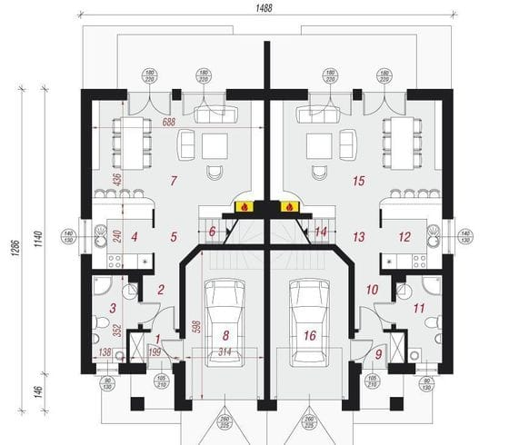
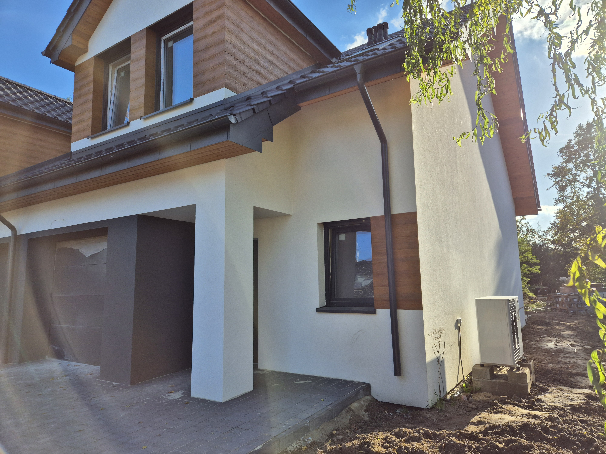

-
Opis
Zamieszkaj w nowoczesnym pół bliźniaku o powierzchni 135 m², który łączy w sobie elegancję, komfort i praktyczność. To idealne miejsce dla rodzin, które pragną uciec od zgiełku miasta, nie rezygnując z wygód współczesnego życia.
Dom BEZCZYNSZOWY w stanie deweloperskim,
co daje Ci możliwość aranżowania przestrzeni według własnych upodobań.
Ponadstandardowe wykończenie deweloperskie!- 💡 Nowoczesne rozwiązania: Przyłącza do klimatyzacji, domofonu i alarmu, nowoczesne instalacje, takie jak pompa ciepła i ogrzewanie podłogowe, pozwolą Ci cieszyć się komfortem przez cały rok, skutecznie obniżając koszty eksploatacji.
- 🔑 Przestronne wnętrza: Harmonijna kombinacja funkcjonalności i estetyki. Duży, jasny salon z otwartą kuchnią jest idealnym miejscem na spotkania z bliskimi, a przestrzeń pozwala na kreatywną aranżację zgodnie z Twoimi potrzebami.
- 🌳 Za ciszą lasu: Zaledwie kilka kroków dzieli Cię od malowniczego Lasu Strachocińskiego. To idealne miejsce, aby cieszyć się aktywnym wypoczynkiem na świeżym powietrzu – od joggingu po weekendowe spacery z rodziną.
- 🚀 Doskonała komunikacja: Dogodna lokalizacja zapewnia szybki dostęp do Centrum. Zaledwie 10 minut spacerem do przystanków, skąd w 30 minut dotrzesz do serca miasta. Nie musisz rezygnować z życia miejskiego.
- 🫠Dobra atmosfera: Spokojna okolica, w pobliżu znajdują się przedszkola,sklepy i inne udogodnienia, które ułatwią codzienne życie.
CENA
1 049 000 zł
1 010 000 zł
✨Wysoki standard w cenie!✨
👉 Zobacz szczegóły techniczne 👈Układ pomieszczeń:
Kondygnacja pierwsza (parter), łączna powierzchnia: 74,48 m²
- Przedsionek 2,32 m²
- Garaż 17,60 m²
- Korytarz 3,24 m²
- Salon z aneksem kuchennym 30,79 m²
- Komunikacja 4,64 m²
- Łazienka 5,54 m²
Kondygnacja druga (piętro), łączna powierzchnia: 62,88 m²
- Korytarz 4,25 m²
- Pokój 1 12,54 m²
- Pokój 2 11,66 m²
- Pokój 3 14,57 m²
- Pokój 4 14,18 m²
- Łazienka 5,49 m²
Na ostatniej kondygnacji budynku znajduje się również strych.
Szczegóły standardu deweloperskiego:
- Żelbetowe ławy fundamentowe;
- Mury fundamentu wykonane z bloczku betonowego B6;
- Ściany zewnętrzne warstwowe pustaki z bloczka ceramicznego 24 cm;
- Ocieplenie styropianem o grubości 20 cm;
- Strop nad parterem TERIVA;
- Drewniana konstrukcja dachu;
- Dachówka ceramiczna w kolorze grafitowym;
- Kominy systemowe, zewnętrzne wykończone tynkiem strukturowym;
- Rynny i rury spustowe stalowe w kolorze grafitowym;
- Ściany zewnętrzne wykończone barwionym tynkiem silikonowym;
- Ściany działowe z pustaków z bloczków ceramicznych o grubości 11,5 cm;
- Ściany wewnętrzne pokryte gipsowym tynkiem maszynowym;
- Sześciokomorowe, trzyszybowe okna PVC w kolorze grafitowym na zewnątrz;
- Aluminiowe rolety elektryczne zewnętrzne na parterze;
- Okna połaciowe drewniane, obrotowe;
- Drzwi wejściowe antywłamaniowe;
- Parapety wewnętrzne i zewnętrzne;
- Posadzki z izolacją przeciwwilgociową i termiczną;
- Zabudowa poddasza izolowana termicznie;
- Balustrady okien balkonowe ze stali nierdzewnej;
- Bramy garażowej z pianką poliuretanową z automatyką;
- Schody wewnętrzne żelbetowe;
- Taras od strony ogrodu z kostki;
- Instalacja elektryczna bez "białego montażu";
- Instalacja sanitarna rozprowadzona;
- Kanały schodowe w domu;
- Ogrodzenie panelowe od strony ogrodów;
- Podjazd przed budynkiem z kostki brukowej.
-
Galeria
 ×
-
Kontakt
Jestem deweloperem i właścicielem, będę mieszkała tuż obok.
Umów się na prezentację i zobacz na własne oczy tę wyjątkową nieruchomość, która może stać się Twoim domem. Przestrzeń, która łączy komfort z naturą, czeka, byś w niej zamieszkał!
Zapraszam do kontaktu!
🏡✨
Karolina:
570 757 596